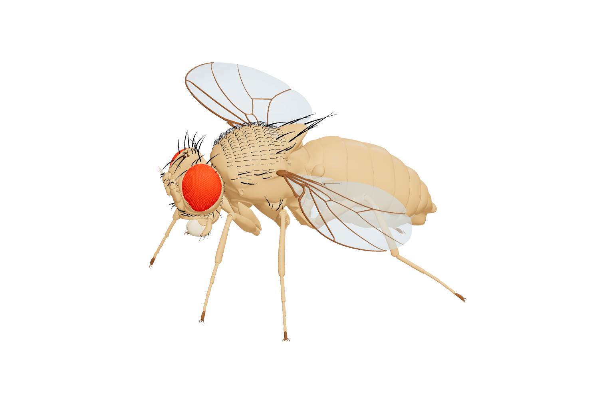

A visual direction, before a full rebuild.
Let the work
set the atmosphere.
Three ways to place a quiet, translucent project behind the page. Handwritten titles bring a human gesture; the research stays clear and legible.
These are static desktop and phone compositions. Open a direction to try the scrolling prototype.
Mist
Silver light. A ghosted specimen. A handwritten title.

Fly circuits
One neuron.
A different output.
the saved motor output.Explore the circuit ↗
Source geometry. Decorative source anatomy.
 MorphBrain
MorphBrain Model Morpher
Model Morpher Morphliner
MorphlinerFly circuits
One neuron.
A different output.
Compare the saved motor output.Explore the circuit ↗
MorphBrainFrom signals to patterns.Desktop and phoneThe lightest touch: a spacious research portfolio with the project always in view.
Night
Deep slate. Pale anatomy. The same handwritten thread.
Fly circuits
One neuron.
A different output.
the saved motor output.Explore the circuit ↗
Source geometry. Decorative source anatomy.
MorphBrainModel MorpherMorphlinerFly circuits
One neuron.
A different output.
Compare the saved motor output.Explore the circuit ↗
MorphBrainFrom signals to patterns.Desktop and phoneA more immersive viewing room, with silver forms emerging from the background.
Editorial
Quiet paper. An italic title. More space for the research.
Fly circuits
One neuron.
A different output.
the saved motor output.Explore the circuit ↗
Source geometry. Decorative source anatomy.
MorphBrainModel MorpherMorphlinerFly circuits
One neuron.
A different output.
Compare the saved motor output.Explore the circuit ↗
MorphBrainFrom signals to patterns.Desktop and phoneA more measured study-page feel. Spectral italic takes the place of handwriting.
Choose the atmosphere.
The evidence stays the same.